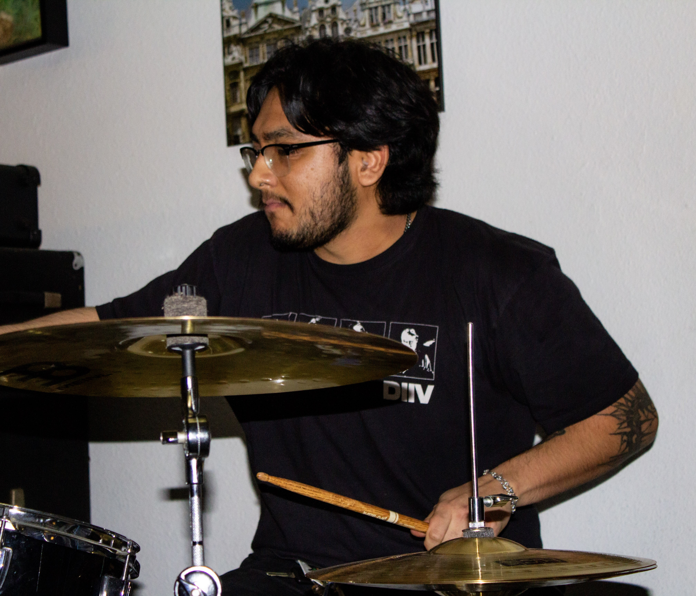
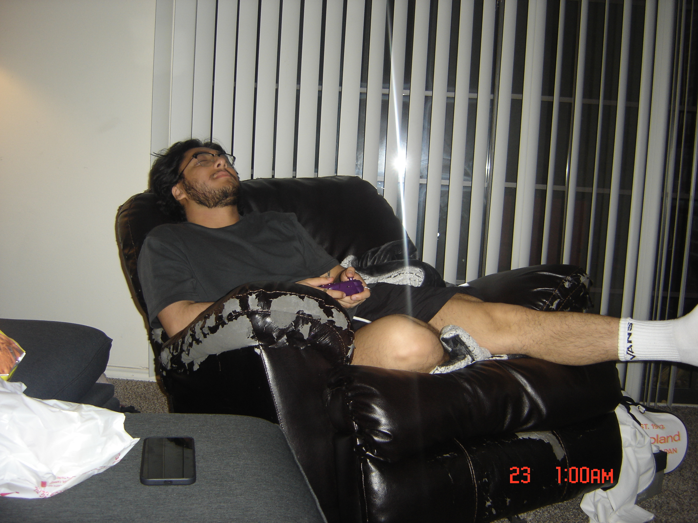
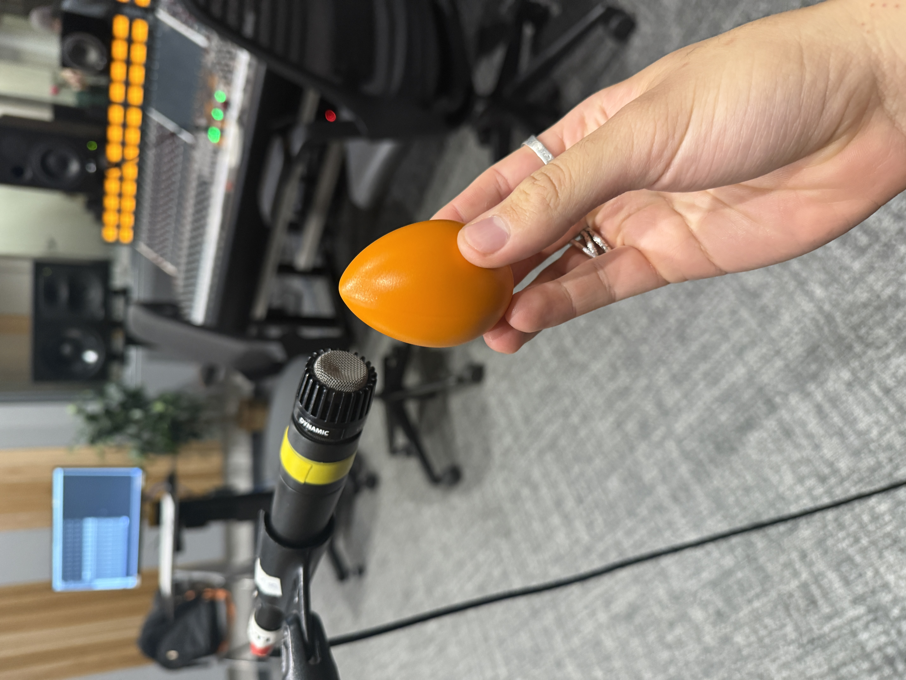
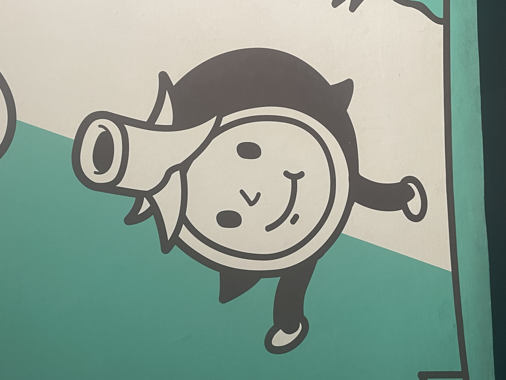

Bio
01Personal


I was a nerd growing up (and still am): straight-A student, glued to video games, falling asleep to math and science videos. I took apart laptops and jailbroke iPhones just to see what was possible, so studying electrical engineering made sense.
Music started with the viola in 5th grade. In middle school I tried French Horn, which I was terrible at, then percussion, which clicked immediately. Drumline took over my life, from scholastic circuits to independent organizations in college, with countless hours alone in practice rooms. Then COVID hit, the music world paused, and I put down my sticks.
A few years later I was out of college, working a corporate job I hated, and going a little crazy without connecting the dots. I bought a guitar and some pedals, then a drum kit, then a bass, and before long I was back in school. Getting back to playing brought me back to myself. Now I play in a few bands, I'm building toward a career in production and audio engineering, and I've put together a small studio in my apartment.
These days I work as a technical writer until AI takes my job, live in north central Austin, and I'm in school for music performance and audio engineering. I've seen 400+ artists live and I'm a Spurs fan, GSG.
I don't find myself all that interesting, but I'm always happy to talk if anyone's curious.
02Audio / Music / Media

I've been playing music for 15+ years, most of it as a percussionist in classical and marching ensembles. These days it's guitar and electronics, drum set, bass, and producing. My setup:
My Gear
- Ableton Live
- Pro Tools
- Reaper
- Kilohearts Phaseplant
- VCV Rack
- Valhalla DSP Plug-ins
- DaVinci Resolve
- Adobe Premiere
- Ashun Hydrasynth Keyboard
- Korg Triton Rack Unit
- Novation Bass Station II
- Yamaha AN200
- Yamaha DX7
- Yamaha PSR-36
- Yamaha SY77
- Behringer Ultrapatch Pro PX3000
- Behringer UMC1820 Audio Interface
- T.C. Electronic G-Force Multi-Effects Processor
- Neve Studio Consoles
- Fender Deluxe Reverb
- Sunn Coliseum-300
- Ampeg 8x10
- Sunn 410H Bass Cabinet
- 2002 Fender Japan Jazz Bass
- 2022 Fender P Bass
- 2021 Fender Jazzmaster
- 2022 Squire Stratocaster
- Sigma Acoustic Guitar
- DW 5000 Series Double Bass Drum Pedal
- Ludwig Supraphonix 14 x 6.5 Snare Drum
- Boss TU-3 Chromatic Tuner
- Boss CEB-3 Bass Chorus
- Boss DD-8 Digital Delay
- Chase Bliss Generation Loss MkII
- EarthQuaker Devices Sunn Life
- Electro-Harmonix Big Muff Pi (Black)
- Electro-Harmonix Freeze
- Electro-Harmonix Memory Toy
- Electronic Audio Experiments Great Hammer
- Empress Bass Compressor
- MXR Bass Octave Deluxe
- Orange Fur Coat Bass Fuzz
- Roland RE-20 Space Echo
- SansAmp GT2
- T.C. Electronic Hall of Fame 2 Reverb
- Akai MPK249 MIDI Keyboard
- Electro-Voice RE20 Microphone
- Mackie ProFX16v3 16-Channel Mixer
- Otari MX5050 BII-2 Reel-to-Reel
- Sennheiser HD 280 Pro Headphones
- Sherman Filterbank
- Tascam Portastudio 488 Mk II
- Maestro Echoplex EP-3
History
- 2026
- Joined Of Grace on bass, now playing guitar and electronics
- Recording project with Groove Mosaic, a local jazz group: recorded, mixed, and mastered a set of charts
- Fifth, sixth, and seventh semesters at ACC. I began taking music composition courses as I gained interest in composing for post-production work
- 2025
- Album Release: Topology - Of a Slow Collapse
- Drummed for tethered to doubt and Mr. Kat
- Second, third, and fourth semesters of audio engineering at ACC
- 2024
- Album Release: disavowal - tethered to doubt
- Played bass for tethered to doubt
- First semester of audio engineering at ACC
- Hiatus2020 – 2023
- Went on music hiatus
- University2019 – 2020
- Performed in UTSA's drumline (2019)
- Auditioned and performed with Violet Crown Independent, an independent percussion organization formerly based in San Antonio (2020)
- Received DCI contract for Madison Scouts, don't think this one counts much as I hadn't even attended a spring camp when Covid struck (2020)
- High school2014 – 2018
- High School Percussionist
- Received John Phillip Sousa award
- Founding member of Sun City Indoor, an independent percussion ensemble
- Founding member of Chapin High Indoor, a scholastic percussion ensemble
- Qualified to perform at the Texas State Solo & Ensemble competition every year of high school
- Start2010
- I signed up for orchestra in 5th grade and started playing music
03Engineering

I studied Electrical Engineering at UTSA and graduated in 2022 with concentrations in Electronic Materials and Devices and in Digital Signal Processing. Coursework ran from circuit analysis and control theory to nanomaterials, semiconductor physics, and analog circuit design. I always gravitated toward analog over digital because it was easier for me to visualize, though I still worked through digital courses like VLSI.
During the school year I also worked in Dr. Ahn's Nanoelectronics Lab at UTSA, where I sat in on graduate courses in quantum physics and spintronics.
My full work history is on LinkedIn, which you can find on the contact page.
I've worked as a
- Senior Technical Writer
- SI Leader for Acoustics
- Applications Engineer
- Undergraduate Researcher
- Yield Enhancement Engineer Intern
- Engineering Lab Tutor
- Transmission and Substation Engineer Intern
Skills
- Hardware
- Oscilloscope, Power Supply Unit, Accelerometer, Audio Analyzer, Soldering Iron, Thermostream, Digital Multimeter
- Applications and Programming Languages
- Adobe FrameMaker, AutoCAD, Mentor PADS Schematic and Layout Design, Visual Studio Code, Visual Studio, Unity, Inkscape, OBS
- C/C++, C#, XML, YAML, JSON, MATLAB, Python, MarkDown, HTML, CSS
- Other
- DocFX, Git, SVN, Perforce, Jira, Confluence, Bitbucket, GitHub, GitLabs
Academic Accolades
- Graduated
- Summa Cum Laude, Honors College
- GPA: 3.94
- Awards
- Undergraduate Research Scholar - 2021, 2022
- Outstanding ECE Undergraduate - 2021
- San Antonio Pipeliners Scholar - 2021
- Mary Pat and Louis Stumberg Endowed Scholar - 2021
- Phi Theta Kappa Scholar - 2019, 2020
- President's List - 2018, 2019, 2020, 2021, 2022
- Professional Affiliations
- Institute of Electrical and Electronic Engineers (IEEE) Member
- Eta Kappa Nu (HKN) Engineering Honor Society